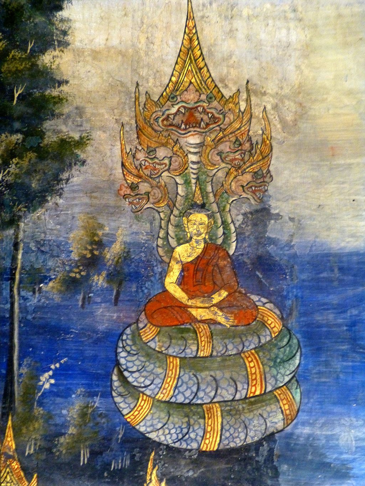
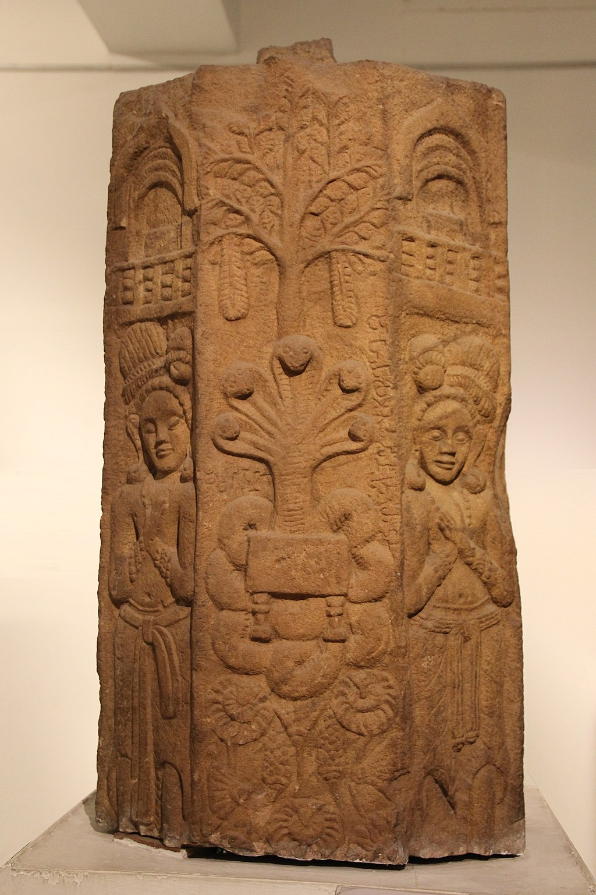

Naga, in Hinduism and Buddhism, is the Sanskrit word for a deity taking the form of a great snake, specifically the multi-headed king cobra. The naga which is seen sheltering the Buddha while meditating is known as Mucilanda.
Mucalinda

Mucalinda protects Buddha (detail), Wat Kasattrathirat, Ayutthayacitation

Pillar with Naga Mucalinda protecting the throne of the Buddha. Railing pillar from Jagannath Tekri, Pauni (Bhandara District). 2nd-1st century BCE. National Museum of India.citation
Mucalinda, Muchalinda or Mucilinda is the name of a nāga, a snake-like being, who protected the Gautama Buddha from the elements after his enlightenment.
It is said that six weeks after Gautama Buddha began meditating under the Bodhi Tree, the heavens darkened for seven days, and a prodigious rain descended.
However, the mighty King of Serpents, Mucalinda, came from beneath the earth and protected with his hood the One who is the source of all protection.
When the great storm had cleared, the serpent king assumed his human form, bowed before the Buddha, and returned in joy to his palace.
In Thai beliefs Nagas are considered the patronage of water.
Nagas are believed to live in either water bodies or in caves.
According to a popular legend, the Mekong River in north-eastern Thailand and Laos was said to be created by two Nāga kings slithering through the area, thus creating the Mekong and the nearby Nan River.
The Mekong is synonymous with the unexplained fireballs phenomenon which has long been believed to be created by the nagas that dwell in the river.
Thai folklore holds the Phaya nagas to be semi-divine, demi-creatures, which possess supernatural powers as has been described in Buddhist and Hindu cosmology.
The "Kamchanod Forest" Ban Dung district, Udon Thani province, which is held in high reverence and fear across Thailand, is believed to be the border between the human world and the netherworld, and is frequently depicted in Thai folklore as the site of many hauntings, but more frequently is considered to be the home of the Nāga.
The Buddhist nāga generally has sometimes portrayed as a human being with a snake or dragon extending over his head. One nāga, in human form, attempted to become a monk; and when telling it that such ordination was impossible, the Buddha told it how to ensure that it would be reborn a human, and so able to become a monk.
The nagas are believed to both live on Nagaloka, among the other minor deities, and in various parts of the human-inhabited earth. Some of them are water-dwellers, living in streams or the ocean; others are earth-dwellers, living in caverns.
The nagas are the followers of Virūpākṣa (Pāli: Virūpakkha), one of the Four Heavenly Kings who guards the western direction. They act as a guard upon Mount Sumeru, protecting the dēvas of Trāyastriṃśa from attack by the asuras.